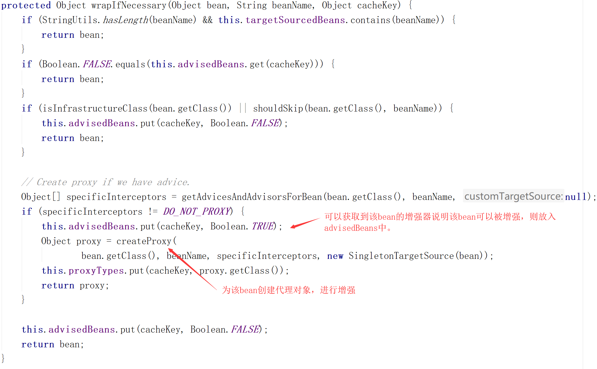

原文连接:https://www.cnblogs.com/lee0527/p/11783444.html
Spring之深入理解AOP源码
在上一篇博文中，我们对AOP有了初步的了解，那么接下来我们就对AOP的实现原理进行深入的分析。
在之前写的那个AOP示例代码当中有这样一个注解：@EnableAspectJAutoProxy，这个注解的作用是开启AOP功能，所以我们就从这个注解引入对AOP源码的分析。
@EnableAspectJAutoProxy
先来看一下它的源代码：
@Target(ElementType.TYPE)
@Retention(RetentionPolicy.RUNTIME)
@Documented
@Import(AspectJAutoProxyRegistrar.class)
public @interface EnableAspectJAutoProxy {
/**
* Indicate whether subclass-based (CGLIB) proxies are to be created as opposed
* to standard Java interface-based proxies. The default is {@code false}.
*/
boolean proxyTargetClass() default false;
/**
* Indicate that the proxy should be exposed by the AOP framework as a {@code ThreadLocal}
* for retrieval via the {@link org.springframework.aop.framework.AopContext} class.
* Off by default, i.e. no guarantees that {@code AopContext} access will work.
* @since 4.3.1
*/
boolean exposeProxy() default false;
} 英文注解已经很详细了,这里简单介绍一下两个参数:
- proxyTargetClass()是用来控制AOP的具体实现方式，为true的话使用CGLIB，为false的话使用JDK的动态代理
- exposeProxy()是用来控制代理的暴露方式,解决内部调用不能使用代理的场景，默认为false.
这里的核心是@Import(AspectJAutoProxyRegistrar.class)来给容器中注AspectJAutoProxyRegistrar这个类：
class AspectJAutoProxyRegistrar implements ImportBeanDefinitionRegistrar {
AspectJAutoProxyRegistrar() {
}
public void registerBeanDefinitions(AnnotationMetadata importingClassMetadata, BeanDefinitionRegistry registry) {
AopConfigUtils.registerAspectJAnnotationAutoProxyCreatorIfNecessary(registry);
AnnotationAttributes enableAspectJAutoProxy = AnnotationConfigUtils.attributesFor(importingClassMetadata, EnableAspectJAutoProxy.class);
if (enableAspectJAutoProxy != null) {
if (enableAspectJAutoProxy.getBoolean("proxyTargetClass")) {
AopConfigUtils.forceAutoProxyCreatorToUseClassProxying(registry);
}
if (enableAspectJAutoProxy.getBoolean("exposeProxy")) {
AopConfigUtils.forceAutoProxyCreatorToExposeProxy(registry);
}
}
}
} 通过源码我们可以看到这个类实现了ImportBeanDefinitionRegistrar接口，这就表明这个类的作用是给容器中注入bean的，具体是注入的是什么bean？我们可以通过调试的方法来具体观察一下：
registerAspectJAnotationAutoProxyCreatorIfNecessary这个方法到底给容器中注入了什么，我们继续跟踪：
@Nullable
private static BeanDefinition registerOrEscalateApcAsRequired(
Class<?> cls, BeanDefinitionRegistry registry, @Nullable Object source) {
Assert.notNull(registry, "BeanDefinitionRegistry must not be null");
//判断容器中是否包含AUTO_PROXY_CREATOR_BEAN_NAME(第一次运行肯定不包含)
if (registry.containsBeanDefinition(AUTO_PROXY_CREATOR_BEAN_NAME)) {
BeanDefinition apcDefinition = registry.getBeanDefinition(AUTO_PROXY_CREATOR_BEAN_NAME);
if (!cls.getName().equals(apcDefinition.getBeanClassName())) {
int currentPriority = findPriorityForClass(apcDefinition.getBeanClassName());
int requiredPriority = findPriorityForClass(cls);
if (currentPriority < requiredPriority) {
apcDefinition.setBeanClassName(cls.getName());
}
}
return null;
}
//不包含就创建一个新的beanDefinition
RootBeanDefinition beanDefinition = new RootBeanDefinition(cls);
beanDefinition.setSource(source);
//设置优先级
beanDefinition.getPropertyValues().add("order", Ordered.HIGHEST_PRECEDENCE);
beanDefinition.setRole(BeanDefinition.ROLE_INFRASTRUCTURE);
//将bean注册到容器中id为AUTO_PROXY_CREATOR_BEAN_NAME
registry.registerBeanDefinition(AUTO_PROXY_CREATOR_BEAN_NAME, beanDefinition);
return beanDefinition;
} 到这里，注解@EnableAspectJAutoProxy开启了AOP功能后，它引入了AspectJAutoProxyRegistrar组件，该组件给容器注册了一个名字为org.springframework.aop.config.internalAutoProxyCreator的组件AnnotationAwareAspectJAutoProxyCreator的定义信息。
接下来我们只需要把关注点放到AnnotationAwareAspectJAutoProxyCreator这个类上面就可以了。
AnnotationAwareAspectJAutoProxyCreator类的层级结构图

我们发现AnnotationAwareAspectJAutoProxyCreator既实现了BeanPostProcessor，还实现了BeanFactoryAware。所以我们要搞清楚AnnotationAwareAspectJAutoProxyCreator作为BeanPostProcessor做了什么事情，作为BeanFactoryAware做了什么事情，然后我们就会对AOP的流程有了一个大致的了解。
下来我们在AnnotationAwareAspectJAutoProxyCreator以及它的父类中寻找到关于BeanPostProcessor和BeanFactoryAware的标志性方法：
AbstractAutoProxyCreator:
//关于BeanFactoryAware
@Override
public void setBeanFactory(BeanFactory beanFactory) {
this.beanFactory = beanFactory;
}
//关于BeanPostProcessor
@Override
public Object postProcessBeforeInstantiation(Class<?> beanClass, String beanName) {
Object cacheKey = getCacheKey(beanClass, beanName);
if (!StringUtils.hasLength(beanName) || !this.targetSourcedBeans.contains(beanName)) {
if (this.advisedBeans.containsKey(cacheKey)) {
return null;
}
if (isInfrastructureClass(beanClass) || shouldSkip(beanClass, beanName)) {
this.advisedBeans.put(cacheKey, Boolean.FALSE);
return null;
}
}
// Create proxy here if we have a custom TargetSource.
// Suppresses unnecessary default instantiation of the target bean:
// The TargetSource will handle target instances in a custom fashion.
TargetSource targetSource = getCustomTargetSource(beanClass, beanName);
if (targetSource != null) {
if (StringUtils.hasLength(beanName)) {
this.targetSourcedBeans.add(beanName);
}
Object[] specificInterceptors = getAdvicesAndAdvisorsForBean(beanClass, beanName, targetSource);
Object proxy = createProxy(beanClass, beanName, specificInterceptors, targetSource);
this.proxyTypes.put(cacheKey, proxy.getClass());
return proxy;
}
return null;
}
//关于BeanPostProcessor
@Override
public Object postProcessAfterInitialization(@Nullable Object bean, String beanName) {
if (bean != null) {
Object cacheKey = getCacheKey(bean.getClass(), beanName);
if (this.earlyProxyReferences.remove(cacheKey) != bean) {
return wrapIfNecessary(bean, beanName, cacheKey);
}
}
return bean;
}
AbstractAdvisorAutoProxyCreator：
//对父类的方法进行重写，运行时调用此方法
@Override
public void setBeanFactory(BeanFactory beanFactory)
{
super.setBeanFactory(beanFactory);
if (!(beanFactory instanceof ConfigurableListableBeanFactory)) {
throw new IllegalArgumentException(
"AdvisorAutoProxyCreator requires a ConfigurableListableBeanFactory: " + beanFactory);
}
//此方法在子类中被重写
initBeanFactory((ConfigurableListableBeanFactory) beanFactory);
}
AnnotationAwareAspectJAutoProxyCreator：
@Override
protected void initBeanFactory(ConfigurableListableBeanFactory beanFactory) {
super.initBeanFactory(beanFactory);
if (this.aspectJAdvisorFactory == null) {
this.aspectJAdvisorFactory = new ReflectiveAspectJAdvisorFactory(beanFactory);
}
this.aspectJAdvisorsBuilder =
new BeanFactoryAspectJAdvisorsBuilderAdapter(beanFactory, this.aspectJAdvisorFactory);
} 我们可以给上面这些方法打上断点，以Debug的方式运行，来具体跟踪一下程序的运行过程(测试示例在上一篇博文当中)
IOC容器的创建
我们跟进创建容器的源码：
我们来具体看一下这个refresh方法
@Override
public void refresh() throws BeansException, IllegalStateException {
synchronized (this.startupShutdownMonitor) {
// Prepare this context for refreshing.
// 准备刷新和加载之前的上下文
prepareRefresh();
// Tell the subclass to refresh the internal bean factory.
//告诉子类刷新内部bean工厂
ConfigurableListableBeanFactory beanFactory = obtainFreshBeanFactory();
// Prepare the bean factory for use in this context.
// 准备在此上下文中使用的bean工厂
prepareBeanFactory(beanFactory);
try {
// Allows post-processing of the bean factory in context subclasses.
//注册对应的BeanPostProcessor接口
postProcessBeanFactory(beanFactory);
// Invoke factory processors registered as beans in the context.
invokeBeanFactoryPostProcessors(beanFactory);
// Register bean processors that intercept bean creation.
// 注册拦截bean创建的bean处理器(bean的后置处理器)
registerBeanPostProcessors(beanFactory);
// Initialize message source for this context.
initMessageSource();
// Initialize event multicaster for this context.
initApplicationEventMulticaster();
// Initialize other special beans in specific context subclasses.
onRefresh();
// Check for listener beans and register them.
registerListeners();
// Instantiate all remaining (non-lazy-init) singletons.
//实例化所有剩余（非延迟初始化）单例
finishBeanFactoryInitialization(beanFactory);
// Last step: publish corresponding event.
finishRefresh();
}
catch (BeansException ex) {
if (logger.isWarnEnabled()) {
logger.warn("Exception encountered during context initialization - " +
"cancelling refresh attempt: " + ex);
}
// Destroy already created singletons to avoid dangling resources.
destroyBeans();
// Reset 'active' flag.
cancelRefresh(ex);
// Propagate exception to caller.
throw ex;
}
finally {
// Reset common introspection caches in Spring's core, since we
// might not ever need metadata for singleton beans anymore...
resetCommonCaches();
}
}
}BeanPostProcessors后置处理器的创建
我们重点来看一下registerBeanPostProcessors注册bean的后置处理器这个方法
registerBeanPostProcessors方法源码：
/**
* 这里的注册所有的实现了BeanPostProcessor接口的类的方法一定顺序来注册
* 1.注册实现PriorityOrdered的BeanPostProcessor
* 2.注册实现Ordered的BeanPostProcessor
* 3.注册所有其他BeanPostProcessor，直到不再出现其他BeanPostProcessor
* 最后，重新注册ApplicationListenerDetector为后处理器以检测内部bean实现ApplicationListener接口的，并将其移动到处理器链的末尾
*/
public static void registerBeanPostProcessors(
ConfigurableListableBeanFactory beanFactory, AbstractApplicationContext applicationContext) {
String[] postProcessorNames = beanFactory.getBeanNamesForType(BeanPostProcessor.class, true, false);
int beanProcessorTargetCount = beanFactory.getBeanPostProcessorCount() + 1 + postProcessorNames.length;
beanFactory.addBeanPostProcessor(new BeanPostProcessorChecker(beanFactory, beanProcessorTargetCount));
List<BeanPostProcessor> priorityOrderedPostProcessors = new ArrayList<>();
List<BeanPostProcessor> internalPostProcessors = new ArrayList<>();
List<String> orderedPostProcessorNames = new ArrayList<>();
List<String> nonOrderedPostProcessorNames = new ArrayList<>();
for (String ppName : postProcessorNames) {
if (beanFactory.isTypeMatch(ppName, PriorityOrdered.class)) {
BeanPostProcessor pp = beanFactory.getBean(ppName, BeanPostProcessor.class);
priorityOrderedPostProcessors.add(pp);
if (pp instanceof MergedBeanDefinitionPostProcessor) {
internalPostProcessors.add(pp);
}
}
else if (beanFactory.isTypeMatch(ppName, Ordered.class)) {
orderedPostProcessorNames.add(ppName);
}
else {
nonOrderedPostProcessorNames.add(ppName);
}
}
sortPostProcessors(priorityOrderedPostProcessors, beanFactory);
registerBeanPostProcessors(beanFactory, priorityOrderedPostProcessors);
List<BeanPostProcessor> orderedPostProcessors = new ArrayList<>();
for (String ppName : orderedPostProcessorNames) {
BeanPostProcessor pp = beanFactory.getBean(ppName, BeanPostProcessor.class);
orderedPostProcessors.add(pp);
if (pp instanceof MergedBeanDefinitionPostProcessor) {
internalPostProcessors.add(pp);
}
}
sortPostProcessors(orderedPostProcessors, beanFactory);
registerBeanPostProcessors(beanFactory, orderedPostProcessors);
List<BeanPostProcessor> nonOrderedPostProcessors = new ArrayList<>();
for (String ppName : nonOrderedPostProcessorNames) {
BeanPostProcessor pp = beanFactory.getBean(ppName, BeanPostProcessor.class);
nonOrderedPostProcessors.add(pp);
if (pp instanceof MergedBeanDefinitionPostProcessor) {
internalPostProcessors.add(pp);
}
}
registerBeanPostProcessors(beanFactory, nonOrderedPostProcessors);
sortPostProcessors(internalPostProcessors, beanFactory);
registerBeanPostProcessors(beanFactory, internalPostProcessors);
beanFactory.addBeanPostProcessor(new ApplicationListenerDetector(applicationContext));
} 由于在源码中写解释注释感觉看起来不是很清楚，直接上截图：
这里要注意的是，获取的这些BeanPostProcessor并没有创建初始化，容器中有的只是它们的定义信息。
那么我们之前提到的关于AOP的一个很重要的组件AnnotationAwareAspectJAutoProxyCreator是在哪一步注入到容器的呢？我们接着来看
具体来跟踪一下它是如何根据名称来获取bean实例的
调用deGetBean
获取不到，所以创建一个新的bean
继续跟进，看它是如何来创建AnnotationAwareAspectJAutoProxyCreator的
实际是调用doCreateBean这个方法创建bean，然后给属性赋值，并初始化bean。
//在doCreateBean里分别调用了这几个方法
//创建bean的实例
instanceWrapper = createBeanInstance(beanName, mbd, args);
//给bean的属性赋值
populateBean(beanName, mbd, instanceWrapper);
//对bean进行初始化
exposedObject = initializeBean(beanName, exposedObject, mbd); 其中比较重要的是这个初始化bean的方法，源码如下：
protected Object initializeBean(final String beanName, final Object bean, @Nullable RootBeanDefinition mbd) {
if (System.getSecurityManager() != null) {
AccessController.doPrivileged((PrivilegedAction<Object>) () -> {
//处理Aware接口的方法回调，如我们的AnnotationAwareAspectJAutoProxyCreator是BeanFactoryAware接口的实例，所会调用接口方法，即给组件传入BeanFactory的值
invokeAwareMethods(beanName, bean);
return null;
}, getAccessControlContext());
}
else {
invokeAwareMethods(beanName, bean);
}
Object wrappedBean = bean;
if (mbd == null || !mbd.isSynthetic()) {
//返回一个被包装的bean(调用了后置处理器的BeanPostProcessorsBeforeInitialization方法)
wrappedBean = applyBeanPostProcessorsBeforeInitialization(wrappedBean, beanName);
}
try {
//执行自定义的初始化方法
invokeInitMethods(beanName, wrappedBean, mbd);
}
catch (Throwable ex) {
throw new BeanCreationException(
(mbd != null ? mbd.getResourceDescription() : null),
beanName, "Invocation of init method failed", ex);
}
if (mbd == null || !mbd.isSynthetic()) {
//返回一个被包装的bean(调用了后置处理器的BeanPostProcessorsAfterInitialization方法)
wrappedBean = applyBeanPostProcessorsAfterInitialization(wrappedBean, beanName);
}
return wrappedBean;
} 对上面的方法截图做具体说明
invokeAwareMethods：
//判断bean的类型执行Aware的接口方法
private void invokeAwareMethods(final String beanName, final Object bean) {
if (bean instanceof Aware) {
if (bean instanceof BeanNameAware) {
((BeanNameAware) bean).setBeanName(beanName);
}
if (bean instanceof BeanClassLoaderAware) {
ClassLoader bcl = getBeanClassLoader();
if (bcl != null) {
((BeanClassLoaderAware) bean).setBeanClassLoader(bcl);
}
}
if (bean instanceof BeanFactoryAware) {
((BeanFactoryAware) bean).setBeanFactory(AbstractAutowireCapableBeanFactory.this);
}
}
}applyBeanPostProcessorsBeforeInitialization:
//获取到所有的BeanPostProcessor，执行它们的接口方法
@Override
public Object applyBeanPostProcessorsBeforeInitialization(Object existingBean, String beanName)
throws BeansException {
Object result = existingBean;
for (BeanPostProcessor processor : getBeanPostProcessors()) {
Object current = processor.postProcessBeforeInitialization(result, beanName);
if (current == null) {
return result;
}
result = current;
}
return result;
} 到这里，就完成了将所有的BeanPostProcessor加入容器的的操作。或许你可能会感觉到有点乱，因为这里包含着方法之间复杂的调用关系，我在下面将BeanPostProcessor加入容器的操作流程再作以总结：
- 先获取IOC容器中已经定义了的需要创建的所有BeanPostProcessor
- 根据优先级给容器中注册BeanPostProcessor
- 注册BeanPostProcessor，实际上就是创建BeanPostProcessor对象，保存在容器中
- 创建bean实例
- 给bean的属性赋值
- 初始化bean
- invokeInitMethods():Aware接口方法回调
- 调用后置处理器applyBeanPostProcessorsBeforeInitialization方法
- 调用自定义的初始化方法invokeInitMethods
- 调用后置处理器applyBeanPostProcessorsAfterInitialization方法
4.把BeanPostProcessor注入到容器中
当我们给容器中注入了AnnotationAwareAspectJAutoProxyCreator组件后，那么在以后我们创建其他bean的时候他的BeanPostProcessor的接口方法就会被调用。我们来看AnnotationAwareAspectJAutoProxyCreator
作为后置处理器接下来都做了些什么？
finishBeanFactoryInitialization初始化所有单实例bean
在这之前我们先回到创建容器的refresh方法，在完成了将BeanPostProcessor加入容器的操作之后，它又进行了这一步比较重要的操作：
//完成BeanFactory的初始化工作
finishBeanFactoryInitialization(beanFactory); 进入方法preInstantiateSingletons(实例化所有单实例的非懒加载的bean)
接下来的步骤实际上也就是bean的创建流程
这个流程与上面创建BeanPostProcessor的创建bean类似，因为后置处理器也是作为一个bean在容器中存在的。getBean方法后面的流程参照上面创建BeanPostProcessor的截图
在这里我们来看一下创建bean的createBean方法里面的resolveBeforeInstantiation方法
createBean方法源码：
@Override
protected Object createBean(String beanName, RootBeanDefinition mbd, @Nullable Object[] args)
throws BeanCreationException {
if (logger.isTraceEnabled()) {
logger.trace("Creating instance of bean '" + beanName + "'");
}
RootBeanDefinition mbdToUse = mbd;
// Make sure bean class is actually resolved at this point, and
// clone the bean definition in case of a dynamically resolved Class
// which cannot be stored in the shared merged bean definition.
Class<?> resolvedClass = resolveBeanClass(mbd, beanName);
if (resolvedClass != null && !mbd.hasBeanClass() && mbd.getBeanClassName() != null) {
mbdToUse = new RootBeanDefinition(mbd);
mbdToUse.setBeanClass(resolvedClass);
}
// Prepare method overrides.
try {
mbdToUse.prepareMethodOverrides();
}
catch (BeanDefinitionValidationException ex) {
throw new BeanDefinitionStoreException(mbdToUse.getResourceDescription(),
beanName, "Validation of method overrides failed", ex);
}
try {
// Give BeanPostProcessors a chance to return a proxy instead of the target bean instance
-----------------------------------------------------------------------------------------------------------------------------------------------------------------------------------------------------------------------------------------------------------------------------------------------------------------------------------------------------------------------------------------------------------------------------------------
//希望后置处理器在此能返回一个代理对象，如果能返回代理对象就使用，如果不能就调用doCreateBean()
Object bean = resolveBeforeInstantiation(beanName, mbdToUse);
if (bean != null) {
return bean;
}
}
catch (Throwable ex) {
throw new BeanCreationException(mbdToUse.getResourceDescription(), beanName,
"BeanPostProcessor before instantiation of bean failed", ex);
}
try {
//在这里----------------------------------------------------------------
//这才是真正的创建bean的方法
Object beanInstance = doCreateBean(beanName, mbdToUse, args);
if (logger.isTraceEnabled()) {
logger.trace("Finished creating instance of bean '" + beanName + "'");
}
return beanInstance;
}
catch (BeanCreationException | ImplicitlyAppearedSingletonException ex) {
// A previously detected exception with proper bean creation context already,
// or illegal singleton state to be communicated up to DefaultSingletonBeanRegistry.
throw ex;
}
catch (Throwable ex) {
throw new BeanCreationException(
mbdToUse.getResourceDescription(), beanName, "Unexpected exception during bean creation", ex);
}
} resolveBeforeInstantiation源码:
进入applyBeanPostProcessorsBeforeInstantiation方法
在这里，我们回想之前开启AOP功能后给容器中注入的AnnotationAwareAspectJAutoProxyCreator组件，它就是一个实现了InstantiationAwareBeanPostProcessor接口的后置处理器，所以在这里就会执行它的接口方法。
在这里要说明InstantiationAwareBeanPostProcessor和BeanPostProcessor的不同是：
BeanPostProcessor是在Bean对象创建完成初始化前后调用的
InstantiationAwareBeanPostProcessor是在Bean实例创建之前先尝试用后置处理器返回对象时调用的
这里对finishBeanFactoryInitialization完成BeanFactory的初始化流程总结一下：
- 遍历获取容器中的所有Bean，依次创建对象getBean()->doGetBean()
- 创建Bean
- 1）、先从缓存中获取当前Bean，如果能获取到，说明Bean之前被创建过(Bean创建后都会被添加到缓存中)，否则再创建Bean。
- 2）、在createBean()中的resolveBeforeInstantiation()方法希望后置处理器返回一个代理对象，如果不能返回就调用doCreateBean()。
- 3）、resolveBeforeInstantiation()这个方法其实就是通过实现了InstantiationAwareBeanPostProcessor这个接口的后置处理器对每一个Bean的创建之前都会有一个拦截。
到此为止，要开始调用AnnotationAwareAspectJAutoProxyCreator的postProcessBeforeInstantiation方法，就是前面说的我们要关注它的接口方法到底做了什么事情。
postProcessBeforeInstantiation源码：
@Override
public Object postProcessBeforeInstantiation(Class<?> beanClass, String beanName) {
Object cacheKey = getCacheKey(beanClass, beanName);
if (!StringUtils.hasLength(beanName) || !this.targetSourcedBeans.contains(beanName)) {
//判断当前的bean是否在advisedBeans中，在advisedBeans中保存了所有需要增强的bean，这里我们是第一次创建bean，所以肯定是不存在的。
if (this.advisedBeans.containsKey(cacheKey)) {
return null;
}
//isInfrastructureClass(beanClass)判断当前的bean是不是实现了Advice、PointCut、Advisor、AopInfrastructureBean接口，或者是标注了@Aspect
//shouldSkip(beanClass, beanName)判断是否需要跳过
if (isInfrastructureClass(beanClass) || shouldSkip(beanClass, beanName)) {
this.advisedBeans.put(cacheKey, Boolean.FALSE);
return null;
}
}
// Create proxy here if we have a custom TargetSource.
// Suppresses unnecessary default instantiation of the target bean:
// The TargetSource will handle target instances in a custom fashion.
TargetSource targetSource = getCustomTargetSource(beanClass, beanName);
if (targetSource != null) {
if (StringUtils.hasLength(beanName)) {
this.targetSourcedBeans.add(beanName);
}
Object[] specificInterceptors = getAdvicesAndAdvisorsForBean(beanClass, beanName, targetSource);
Object proxy = createProxy(beanClass, beanName, specificInterceptors, targetSource);
this.proxyTypes.put(cacheKey, proxy.getClass());
return proxy;
}
return null;
} postProcessAfterInitialization源码：
@Override
public Object postProcessAfterInitialization(@Nullable Object bean, String beanName) {
if (bean != null) {
Object cacheKey = getCacheKey(bean.getClass(), beanName);
if (this.earlyProxyReferences.remove(cacheKey) != bean) {
//返回需要包装的bean
return wrapIfNecessary(bean, beanName, cacheKey);
}
}
return bean;
} 返回当前bean的包装对象
找到能在当前bean使用的增强器(即找到哪些通知方法是需要切入到当前bean的)
具体是怎么找的呢：就是使用切面类(@Aspect)里面的切入点表达式(@PointCut)来进行匹配

为当前bean创建代理对象：
创建AOP代理对象源码：
@Override
public AopProxy createAopProxy(AdvisedSupport config) throws AopConfigException {
if (config.isOptimize() || config.isProxyTargetClass() || hasNoUserSuppliedProxyInterfaces(config)) {
Class<?> targetClass = config.getTargetClass();
if (targetClass == null) {
throw new AopConfigException("TargetSource cannot determine target class: " +
"Either an interface or a target is required for proxy creation.");
}
//如果该类有实现接口，则使用JDK动态代理
if (targetClass.isInterface() || Proxy.isProxyClass(targetClass)) {
return new JdkDynamicAopProxy(config);
}
//没有实现接口，则使用Cglib动态代理
return new ObjenesisCglibAopProxy(config);
}
else {
return new JdkDynamicAopProxy(config);
}
} 当wrapIfNecessary(bean, beanName, cacheKey)方法一步一步执行完毕，就给当前容器中返回当前组件使用Cglib增强了的代理对象。
AnnotationAwareAspectJAutoProxyCreator的作用总结：
- 每一个Bean创建之前，调用postProcessBeforeInstantiation()
- 判断当前Bean是否在advisedBeans中
- 判断当前Bean是否是基础类型的Advice、PointCut、Advisor、AopInfrastructureBean，或者是不是@Aspect标注的切面
- 判断是否需要跳过
- 创建对象，调用postProcessAfterInitialization()，里面wrapIfNecessary()方法返回一个bean的包装对象
- 获取当前Bean的所有增强器(通知方法)
- ①找到候选的增强器(哪些通知方法是需要切入当前Bean方法的)
- ②获取到能再Bean使用的增强器
- ③给增强器排序
- 保存当前Bean在advisedBeans中
- 如果当前Bean需要增强，创建Bean的增强后的代理对象
- 获取当前Bean的所有增强器(通知方法)
- 以后从容器中获取到的就是这个Bean的代理对象，执行目标方法时，代理对象就会执行通知方法的流程。
到此为止，我们就已经从@EnableAspectJAutoProxy这个注解入手一步一步分析到了创建Bean的AOP代理对象这一步，其中包括了IOC容器得创建，BeanPostProcessor的创建以及所有Bean的创建的部分流程。
目标方法的执行
既然我们已经知道Bean的AOP代理对象是如何创建完成的，那么为什么我们在执行代理对象的目标方法时，通知方法也会按照顺序来执行呢？请看接下来的分析过程。
我们给示例代码的目标方法打上断点，Debug运行：
忽略JDK的类加载方法，我们来到了CglibAopProxy这个类的intercept()方法（拦截目标方法的执行）
@Override
@Nullable
public Object intercept(Object proxy, Method method, Object[] args, MethodProxy methodProxy) throws Throwable {
Object oldProxy = null;
boolean setProxyContext = false;
Object target = null;
TargetSource targetSource = this.advised.getTargetSource();
try {
if (this.advised.exposeProxy) {
oldProxy = AopContext.setCurrentProxy(proxy);
setProxyContext = true;
}
target = targetSource.getTarget();
Class<?> targetClass = (target != null ? target.getClass() : null);
//从代理工厂中获取将要执行目标方法的拦截器链
List<Object> chain = this.advised.getInterceptorsAndDynamicInterceptionAdvice(method, targetClass);
Object retVal;
//如果没有拦截器链，直接执行目标方法
if (chain.isEmpty() && Modifier.isPublic(method.getModifiers())) {
Object[] argsToUse = AopProxyUtils.adaptArgumentsIfNecessary(method, args);
retVal = methodProxy.invoke(target, argsToUse);
}
//如果有拦截器链，把需要执行的目标对象、目标方法、拦截器链等信息传入创建一个CglibMethodInvocation，并调用proceed()
else {
retVal = new CglibMethodInvocation(proxy, target, method, args, targetClass, chain, methodProxy).proceed();
}
retVal = processReturnType(proxy, target, method, retVal);
return retVal;
}
finally {
if (target != null && !targetSource.isStatic()) {
targetSource.releaseTarget(target);
}
if (setProxyContext) {
AopContext.setCurrentProxy(oldProxy);
}
}
} 如何来获取拦截器链
每一个通知方法被包装为MethodInterceptor(方法拦截器)，在调用目标对象的方法时，就可以实现在调用方法之前、调用方法过程中、调用方法之后对其进行控制。
拦截器链生成后，就会把它和其他信息包装称为CglibMethodInvocation，然后再调用CglibMethodInvocation的proceed()方法，从中我们就可以知晓目标方法和通知方法的执行过程。
proceed()源码：
public Object proceed() throws Throwable {
// We start with an index of -1 and increment early.
if (this.currentInterceptorIndex == this.interceptorsAndDynamicMethodMatchers.size() - 1) {
return invokeJoinpoint();
}
Object interceptorOrInterceptionAdvice =
this.interceptorsAndDynamicMethodMatchers.get(++this.currentInterceptorIndex);
if (interceptorOrInterceptionAdvice instanceof InterceptorAndDynamicMethodMatcher) {
// Evaluate dynamic method matcher here: static part will already have
// been evaluated and found to match.
InterceptorAndDynamicMethodMatcher dm =
(InterceptorAndDynamicMethodMatcher) interceptorOrInterceptionAdvice;
Class<?> targetClass = (this.targetClass != null ? this.targetClass : this.method.getDeclaringClass());
if (dm.methodMatcher.matches(this.method, targetClass, this.arguments)) {
return dm.interceptor.invoke(this);
}
else {
// Dynamic matching failed.
// Skip this interceptor and invoke the next in the chain.
return proceed();
}
}
else {
// It's an interceptor, so we just invoke it: The pointcut will have
// been evaluated statically before this object was constructed.
return ((MethodInterceptor) interceptorOrInterceptionAdvice).invoke(this);
}
} proceed()方法总结：链式获取每一个拦截器，拦截器执行invoke方法，每一个拦截器等待下一个拦截器执行完成返回以后再来执行，由于拦截器链中的拦截器(被包装的增强器)是有优先级的，所以可以保证通知方法和目标方法的正确的执行顺序。
AOP总结：
- @EnableAspectJAutoProxy开启AOP功能；
- @EnableAspectJAutoProxy给容器中注册了一个组件AnnotationAwareAspectJAutoProxyCreator；
- AnnotationAwareAspectJAutoProxyCreator是一个后置处理器；
- 容器的创建流程：
- registerBeanPostProcessors(beanFactory)注册后置处理器，创建AnnotationAwareAspectJAutoProxyCreator对象。
- finishBeanFactoryInitialization(beanFactory)初始化剩下的单实例Bean：
- 创建业务逻辑组件和切面组件
- AnnotationAwareAspectJAutoProxyCreator拦截组件的创建过程
- 组件创建完成后判断组件是否需要增强：如果需要增强，将切面的通知方法包装成增强器(Advisor)，给业务逻辑组件创建一个代理对象
- 执行目标方法：
- 代理对象执行目标方法
- CglibAopProxy.intercept()方法进行拦截：
- 得到目标方法的拦截器链(增强器包装成拦截器)
- 利用拦截器链机制，依次进入到每一个拦截器执行方法